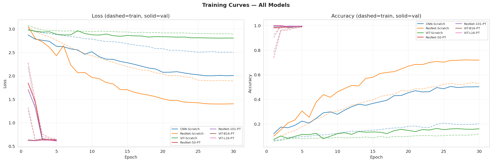
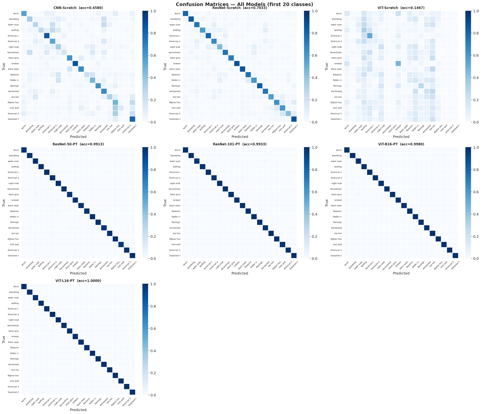
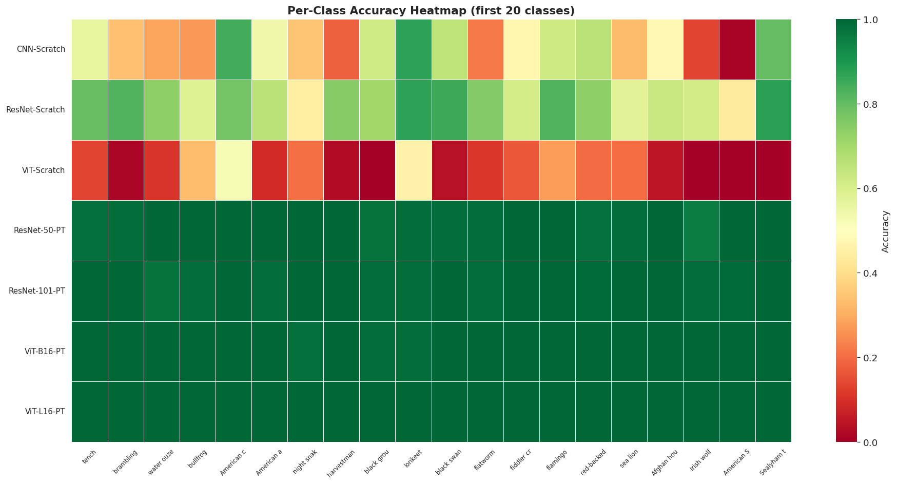
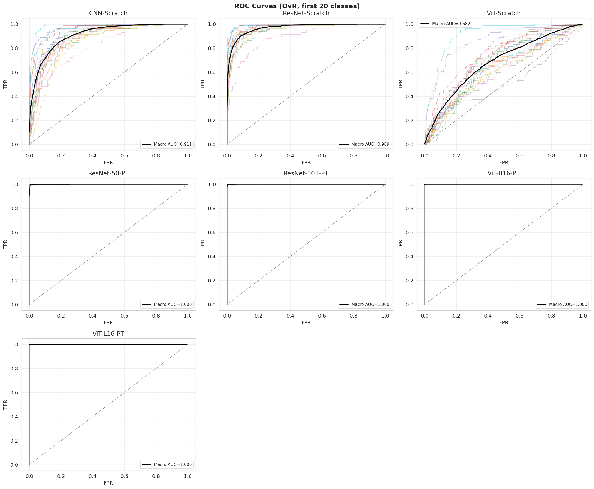
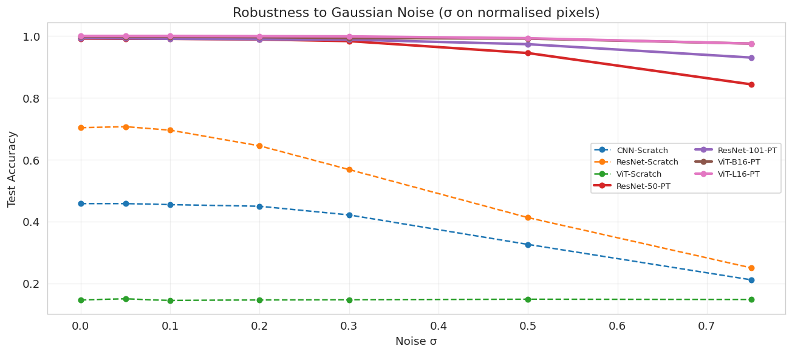
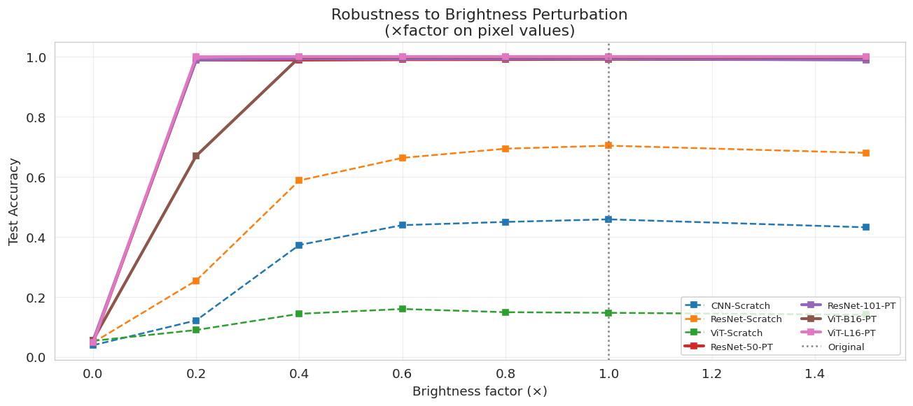
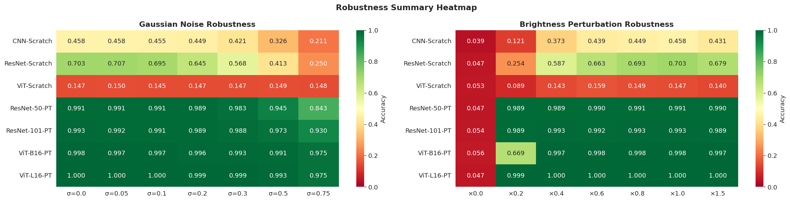
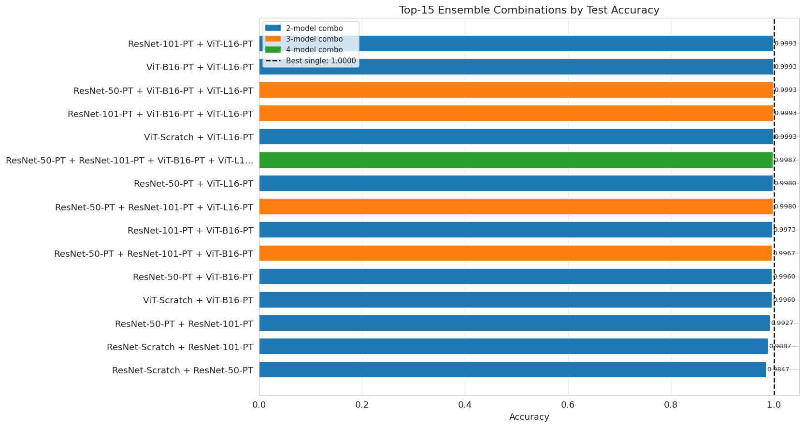
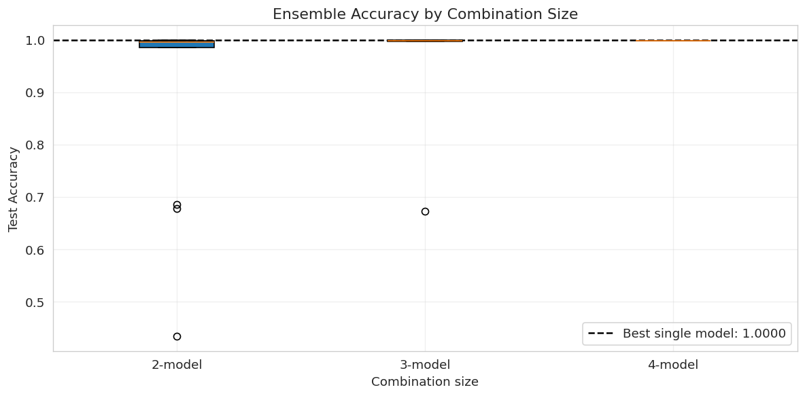
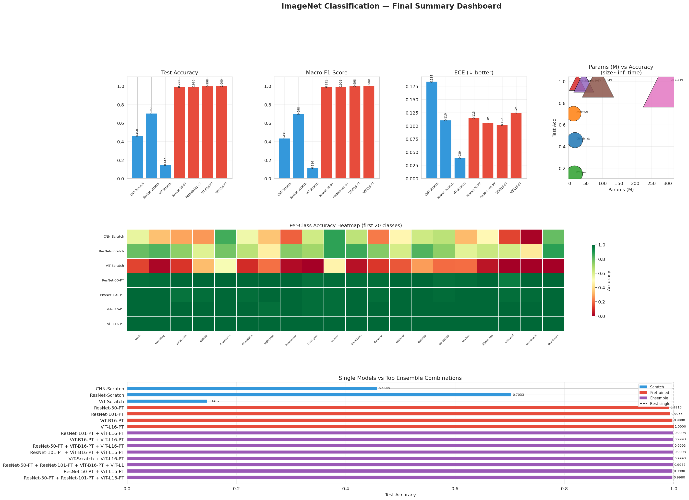

Results & analysis
Final metrics, learning curves, robustness, and ensemble gains for seven image models (3 scratch, 4 pretrained).
assets/image.
Main comparison
Test-set results from summary_table.csv.
| Model | Type | Test Acc | Macro F1 | Macro AUC | Params (M) | Train (min) | Inf (s) | ECE |
|---|---|---|---|---|---|---|---|---|
| ViT-L16-PT | Pretrained | 1.0000 | 1.0000 | 1.0000 | 303.32 | 70.6 | 53.30 | 0.124 |
| ViT-B16-PT | Pretrained | 0.9980 | 0.9979 | 1.0000 | 85.81 | 22.0 | 19.77 | 0.102 |
| ResNet-101-PT | Pretrained | 0.9933 | 0.9935 | 0.9999 | 42.54 | 8.5 | 8.28 | 0.105 |
| ResNet-50-PT | Pretrained | 0.9913 | 0.9913 | 0.9998 | 23.55 | 5.7 | 5.28 | 0.115 |
| ResNet-Scratch | Scratch | 0.7033 | 0.6978 | 0.9688 | 11.19 | 22.2 | 4.46 | 0.110 |
| CNN-Scratch | Scratch | 0.4580 | 0.4338 | 0.9108 | 15.73 | 23.0 | 4.74 | 0.184 |
| ViT-Scratch | Scratch | 0.1467 | 0.1161 | 0.6822 | 14.57 | 27.8 | 5.32 | 0.039 |
Learning curves
Train/val loss and accuracy across seven models.

Training curves
Loss and accuracy for scratch and pretrained models; dashed = train, solid = val.
Confusion & ROC
Per-class performance views.

Confusion matrices
Row-normalized matrices across models.

Per-class accuracy
Heatmap of accuracy per model × class.

ROC curves
OvR ROC curves with macro average.
Noise & brightness stress
Accuracy under Gaussian noise and brightness shifts.

Gaussian noise
Accuracy vs σ for all models.

Brightness
Accuracy vs brightness factor.

Robustness heatmap
Models × noise levels for Gaussian noise (left) and brightness (right).
Ensemble gains
Combination search over seven models (ensemble_results.csv).

Top combinations
Top-15 ensembles ranked by test accuracy; dashed line = best single model.

Accuracy by ensemble size
Box-and-whisker grouped by ensemble size.
Summary dashboard
One-page view of accuracy, F1, ECE, params vs accuracy, per-class heatmap, and training time vs accuracy.

Final summary dashboard
Composite view of key metrics and trade-offs.